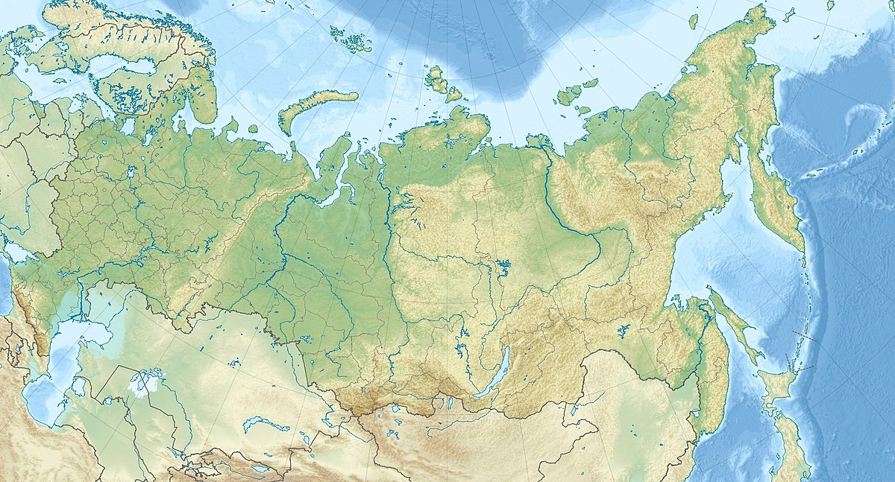

Expansiunea teritorială a Rusiei s-a realizat în mare parte în secolul al XVI-lea sub cazacul Iermak Timofeievici în timpul domniei lui Ivan cel Groaznic, într-o vreme când orașele-stat concurente din regiunile de vest ale Rusiei s-au unit pentru a forma o singură țară. Iermak a adunat o armată și a mers spre est, unde a cucerit aproape toate teritoriile care odinioară aparținuseră mongolilor, învingându-l pe conducătorul lor, hanul Kucium.
Rusia are o bază largă de resurse naturale, inclusiv mari depozite de cherestea, petrol, gaze naturale, cărbune, minereuri și alte resurse minerale.
Cele mai îndepărtate două puncte ale Rusiei sunt la aproximativ 8.000 km distanță de-a lungul unei geodezice. Aceste puncte sunt: un cordon litoral al Vistulei de 60 km la granița cu Polonia ce desparte Golful Gdańsk de Limanul Vistulei și cel mai sud-estic punct al Insulelor Kurile. Punctele aflate la cea mai mare distanță pe longitudine sunt la 6.600 km distanță pe o linie geodezică. Aceste puncte sunt: în partea de vest, același cordon litoral de pe granița cu Polonia, și în est, Insula Marele Diomede. Federația Rusă se întinde pe 11 fuse orare.
Muntele Elbrus, cel mai înalt punct din Caucaz, din Rusia și din Europa Mare parte din suprafața Rusiei constă din vaste întinderi de câmpii care sunt predominant stepe înspre sud și puternic împădurite spre nord, cu tundră de-a lungul coastei de nord. Rusia deține 10% din terenul arabil din lume. Se întâlnesc lanțuri muntoase de-a lungul frontierelor sudice, cum ar fi Caucazul (cu Muntele Elbrus care, la 5.462 m, este cel mai înalt punct din Rusia și din Europa) și Altai (cu Muntele Beluha, care, la 4.506 m este cel mai înalt punct din Siberia din afara Orientului Îndepărtat Rus); și în est, cum ar fi Lanțul Verhoiansk sau vulcanii din Peninsula Kamceatka (cu Kliuchevskaia Sopka, care, la 4.750 m, este cel mai înalt vulcan activ din Eurasia, precum și cel mai înalt punct al Rusiei Asiatice). Munții Ural, bogați în resurse minerale, formează un lanț pe direcția nord-sud care desparte Europa de Asia.
Harta geografică a Rusiei
Rusia are o coastă lungă de peste 37.000 km de-a lungul Oceanelor Arctic și Pacific, precum și de-a lungul Mării Baltice, Mării Azov, Mării Negre și Mării Caspice. Marea Barents, Marea Albă, Marea Kara, Marea Laptev, Marea Siberiei de Est, Marea Ciukotsk, Marea Bering, Marea Ohotsk și Marea Japoniei sunt legate de Rusia prin intermediul Oceanelor Arctic și Pacific. Cele mai mari insule și arhipelaguri rusești sunt arhipelagul Novaia Zemlea, Franz Josef, Severnaia Zemlea, Insulele Noua Siberie, Insula Vranghel, Insulele Kurile și Sahalin. Insulele Diomede (una controlată de Rusia, cealaltă de Statele Unite) sunt la doar 3 km distanță, iar Insula Kunașir este la aproximativ 20 km de Hokkaido, Japonia.